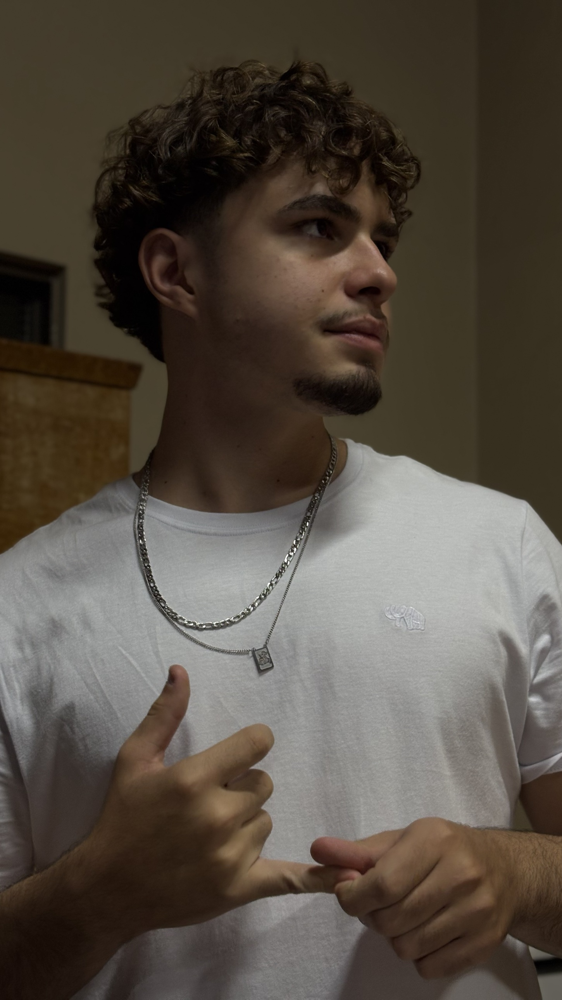
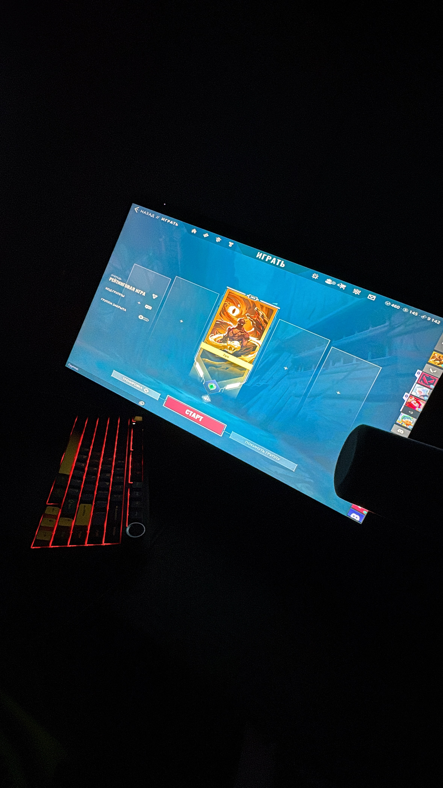

KEVYNRODRIGUES
Estudante de BSI, Unoeste, 2º semestre. Interesse em desenvolvimento web. Este portfólio tem como exemplo de estudo, para aprimorar minhas habilidades em HTML e CSS.

Estudante de BSI, Unoeste, 2º semestre. Interesse em desenvolvimento web. Este portfólio tem como exemplo de estudo, para aprimorar minhas habilidades em HTML e CSS.
Sou um estudante de programação, atualmente cursando o 2º semestre. Tenho interesse em desenvolvimento web e estou sempre buscando aprender novas tecnologias e aprimorar minhas habilidades.
Meu hobby é jogar, gosto de jogar jogos FPS como Valorant, atualmente Ascendente I. Além disso, gosto de assistir animes e séries.

Ja possuo experiencia em estágio — Fórum Judicial de Mirante do Paranapanema
Período: 04/2024 a 12/2025
Atuei como estagiário no Fórum Judicial de Mirante do Paranapanema, auxiliando na rotina de Civel. Entre as principais atividades desenvolvidas estavam a análise e organização de processos físicos e digitais, elaboração de minutas de despachos e certidões, acompanhamento de audiências e apoio à equipe de magistrados e servidores no cumprimento de prazos processuais.
A experiência permitiu aplicar na prática conceitos estudados em disciplinas como Direito Processual Civil, além de desenvolver habilidades de organização, atenção a detalhes e compreensão do funcionamento do sistema judiciário. O contato direto com processos reais também contribuiu para uma visão mais clara sobre a rotina forense e as diferentes áreas de atuação jurídica.
Os projetos ainda nao foram feitos.